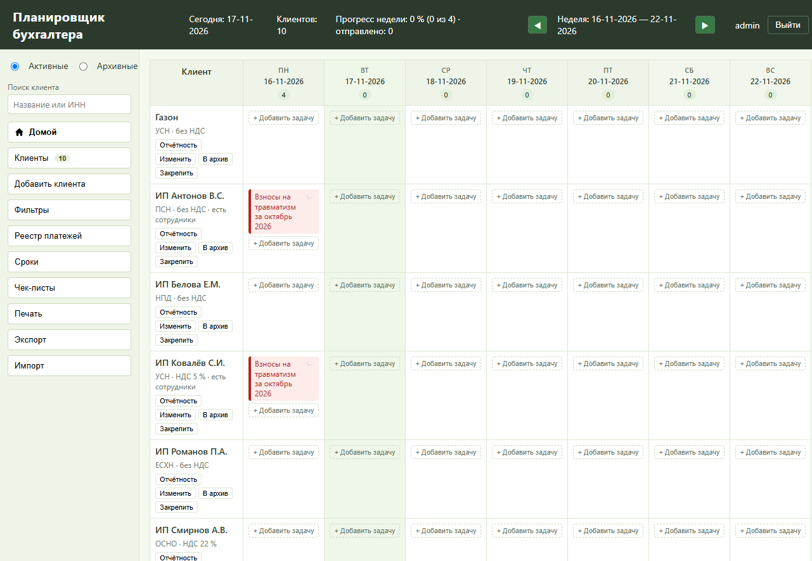
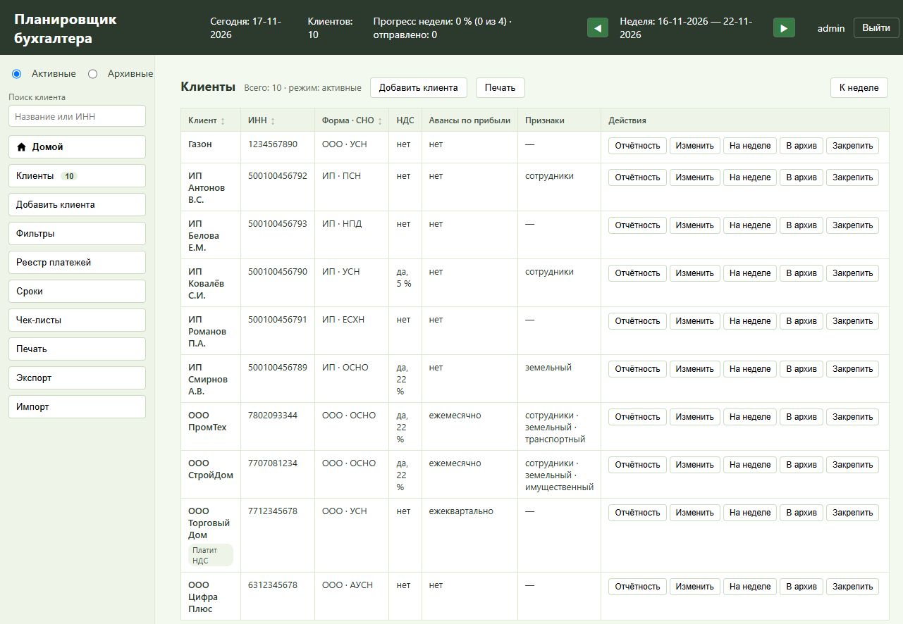
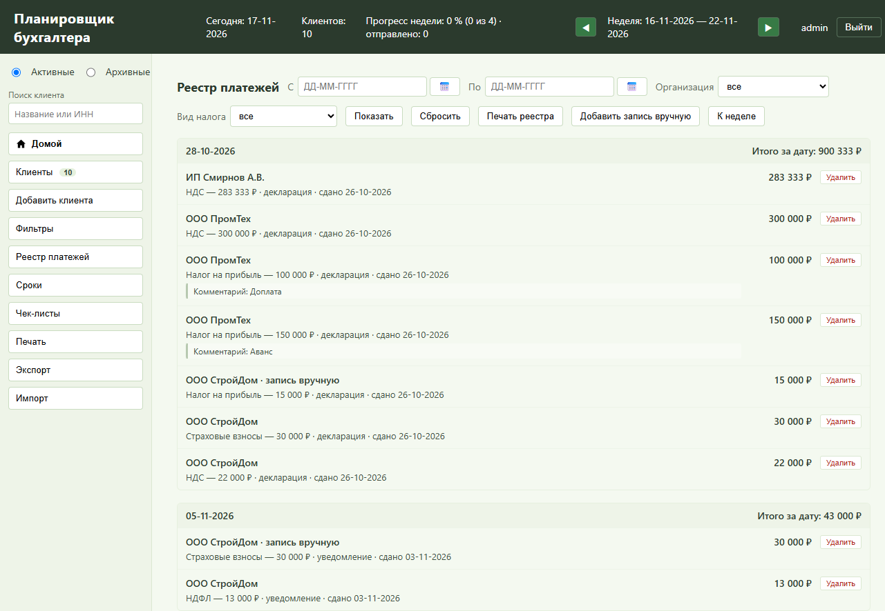

Кейс проекта
Серверное приложение для бухгалтера: клиенты, сроки отчётности, задачи недели и автоматизированный реестр налоговых платежей в одном месте. Правила задаются данными, а не кодом — приложение само строит календарь на год.
Код проекта на GitHub →Сделать серверное приложение по ТЗ версии 1.15: оно должно само строить календарь сроков по клиентам, показывать задачи на неделю, хранить платежи и выводить печатные формы — без внешних библиотек и сборки.
Бухгалтер, ведущий небольшую практику: несколько клиентов-ИП и ООО, разные системы налогообложения, десятки сроков в году. Раньше — таблицы Excel, закладки с сайтами и ручные напоминания.
Сроки разбросаны по источникам, а правила зависят от формы клиента и системы налогообложения. Вручную легко пропустить дату или перепутать задачу; готовые сервисы платные, тяжёлые и требуют подключения данных.
Сервер на Node.js со встроенным SQLite и интерфейс в браузере. Правила отчётности описаны данными, поэтому приложение само строит календарь сроков, а интерфейс показывает их сеткой недели, по клиенту и в реестре платежей.
Сетка недели с поиском и статусами; справочник клиентов с сортировкой, печатью и переходом к клиенту; автоматизированное формирование реестра налоговых платежей с суммами и расшифровкой; сроки и производственный календарь; чек-листы; экспорт и импорт копии; восстановление базы; смена пароля.
Node.js без внешних зависимостей: встроенный модуль node:sqlite, scrypt для хеша пароля, сессионные cookie. Чистые HTML, CSS и JavaScript без сборки и CDN. Календарь нерабочих дней — из готовых официальных источников; разработка — в OpenCode.
Рабочее приложение, принятое по ТЗ версии 1.15: все десять этапов закрыты, 350 регрессионных проверок проходят, 36 дат и 86 задач на горизонте 01.10.2026 – 30.04.2027 сходятся с таблицей ТЗ. Работает на одном рабочем месте: один сервер, одна учётная запись, данные в файле базы. Интерфейс выдержан в светло-зелёной гамме, контраст и статусы проверены в браузере.



Хотите такой же результат для своей задачи?